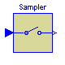
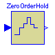
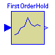
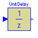
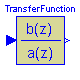
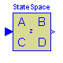
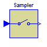
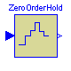
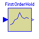
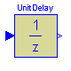
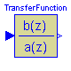
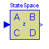
This package contains discrete control blocks with fixed sample period. Every component of this package is structured in the following way:
A sampled data system may consist of components of package Discrete and of every other purely algebraic input/output block, such as the components of packages Modelica.Blocks.Math, Modelica.Blocks.Nonlinear or Modelica.Blocks.Sources.
This package contains the following components:
Integrator Discrete-time approximation of integrator
LimIntegrator Discrete-time approximation of integrator
with limited values of the outputs
Derivative Discrete-time approximation of derivative block
FirstOrder Discrete-time approximation of first order system
SecondOrder Discrete-time approximation of second order system
PI Discrete-time approximation of PI controller
PID Discrete-time approximation of PID controller
LimPID Discrete-time PID controller with limited output,
anti-windup compensation and set-point weighting
TransferFunction Discrete-time approximation of transfer function
StateSpace Discrete-time approximation of state space system
ADconverter Analog to digital converter
DAconverter Digital to analog converter
Sampler Ideal sampling of continuous signals
ZeroOrderHold Zero order hold of a sampled-data system
UnitDelay Delay input signal by one sampling period
This package is not part of the Modelica standard library, because it is planned to realize an improved package with vectorized components (similiar to the Modelica.Blocks.Continuous package) and several different ways to define the sample period. Especially, the sample period may optionally be defined via an outer parameter in a higher level. This features cannot be provided in a satisfactory way in Modelica version 1.3, due to some missing properties of the replaceable attribute.
Release Notes:
Copyright (C) 2000, DLR.
The Discrete package is free software; it can be redistributed and/or modified under the terms of the Modelica license, see the license conditions and the accompanying disclaimer in the documentation of package Modelica in file "Modelica/package.mo".
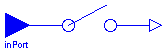
Samples the continues input signals with a sampling rate defined via parameter samplePeriod.
| Name | Default | Description |
|---|---|---|
| n | 1 | Number of inputs (= number of outputs) |
| samplePeriod | 0.1 | Sample period of component [s] |
| startTime | 0 | First sample time instant [s] |
block Sampler "Ideal sampling of continuous signals"
extends Interfaces.DiscreteMIMOs;
equation
when sampleTrigger then
y = u;
end when;
end Sampler;

The output is identical to the sampled input signal at sample time instants and holds the output at the value of the last sample instant during the sample points.
| Name | Default | Description |
|---|---|---|
| n | 1 | Number of inputs (= number of outputs) |
| samplePeriod | 0.1 | Sample period of component [s] |
| startTime | 0 | First sample time instant [s] |
block ZeroOrderHold "Zero order hold of a sampled-data system"
extends Interfaces.DiscreteMIMOs;
protected
discrete Real ySample[n];
equation
when sampleTrigger then
ySample = u;
end when;
/* Define y=ySample with an infinitesimal delay to break potential
algebraic loops if both the continuous and the discrete part have
direct feedthrough
*/
y = pre(ySample);
end ZeroOrderHold;

The output signal is the extrapolation through the values of the last two sampled input signals.
| Name | Default | Description |
|---|---|---|
| n | 1 | Number of inputs (= number of outputs) |
| samplePeriod | 0.1 | Sample period of component [s] |
| startTime | 0 | First sample time instant [s] |
block FirstOrderHold "First order hold of a sampled-data system"
extends Interfaces.DiscreteMIMOs;
protected
discrete Real ySample[n];
discrete Real tSample;
discrete Real c[n];
equation
when sampleTrigger then
ySample = u;
tSample = time;
c = if firstTrigger then zeros(n) else (ySample - pre(ySample))/
samplePeriod;
end when;
/* Use pre(ySample) and pre(c) to break potential algebraic loops by an
infinitesimal delay if both the continuous and the discrete part
have direct feedthrough.
*/
y = pre(ySample) + pre(c)*(time - tSample);
end FirstOrderHold;

This block describes a unit delay:
1
y = --- * u
z
that is, the output signal y is the input signal u of the previous sample instant. Before the second sample instant, the output y is identical to parameter yStart.
Release Notes:
| Name | Default | Description |
|---|---|---|
| yStart[:] | {0} | Initial values of output signals |
| samplePeriod | 0.1 | Sample period of component [s] |
| startTime | 0 | First sample time instant [s] |
block UnitDelay "Unit Delay Block"
parameter Real yStart[:]={0} "Initial values of output signals";
extends Interfaces.DiscreteMIMOs(
final n=size(yStart, 1),
y(final start=yStart),
outPort(signal(start=yStart)));
protected
discrete Real yTemp[n](start=yStart);
equation
when sampleTrigger then
yTemp = u;
y = pre(yTemp);
end when;
end UnitDelay;
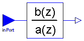
The discrete transfer function block defines the transfer function between the input signal u and the output signal y. The numerator has the order nb-1, the denominator has the order na-1.
b(1)*z^(nb-1) + b(2)*z^(nb-2) + ... + b(nb)
y(z) = -------------------------------------------- * u(z)
a(1)*z^(na-1) + a(2)*z^(na-2) + ... + a(na)
p>
State variables x are defined according to controller canonical
form. Initial values of the states can be set as start values of x.
Example:
Blocks.Discrete.TransferFunction g(b = {2,4}, a = {1,3});
results in the following transfer function:
2*z + 4
y = --------- * u
z + 3
Release Notes:
| Name | Default | Description |
|---|---|---|
| b[:] | {1} | Numerator coefficients of transfer function. |
| a[:] | {1,1} | Denominator coefficients of transfer function. |
| samplePeriod | 0.1 | Sample period of component [s] |
| startTime | 0 | First sample time instant [s] |
block TransferFunction "Discrete Transfer Function block"
parameter Real b[:]={1}
"Numerator coefficients of transfer function.";
parameter Real a[:]={1,1}
"Denominator coefficients of transfer function.";
extends Interfaces.DiscreteSISO;
output Real x[size(a, 1) - 1]
"State of transfer function from controller canonical form";
protected
parameter Integer nb=size(b, 1)
"Size of Numerator of transfer function";
parameter Integer na=size(a, 1)
"Size of Denominator of transfer function";
Real x1;
Real xn;
equation
when sampleTrigger then
/* State variables x are defined according to
controller canonical form. */
[x; xn] = [x1; pre(x)];
[u] = transpose([a])*[x1; pre(x)];
[y] = transpose([zeros(na - nb, 1); b])*[x1; pre(x)];
end when;
end TransferFunction;
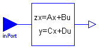
The discrete state space block defines the relation between the input u=inPort.signal and the output y=outPort.signal in state space form:
x = A * pre(x) + B * u
y = C * pre(x) + D * u
where pre(x) is the value of the discrete state x at the previous sample time instant. The input is a vector of length nu, the output is a vector of length ny and nx is the number of states. Accordingly
A has the dimension: A(nx,nx),
B has the dimension: B(nx,nu),
C has the dimension: C(ny,nx),
D has the dimension: D(ny,nu)
Example:
parameter: A = [0.12, 2;3, 1.5]
parameter: B = [2, 7;3, 1]
parameter: C = [0.1, 2]
parameter: D = zeros(ny,nu)
results in the following equations:
[x[1]] [0.12 2.00] [pre(x[1])] [2.0 7.0] [u[1]]
[ ] = [ ]*[ ] + [ ]*[ ]
[x[2]] [3.00 1.50] [pre(x[2])] [0.1 2.0] [u[2]]
[pre(x[1])] [u[1]]
y[1] = [0.1 2.0] * [ ] + [0 0] * [ ]
[pre(x[2])] [u[2]]
| Name | Default | Description |
|---|---|---|
| A[:, size(A, 1)] | [1, 0; 0, 1] | Matrix A of state space model |
| B[size(A, 1), :] | [1; 1] | Matrix B of state space model |
| C[:, size(A, 1)] | [1, 1] | Matrix C of state space model |
| D[size(C, 1), size(B, 2)] | zeros(size(C, 1), size(B, 2)) | Matrix D of state space model |
| samplePeriod | 0.1 | Sample period of component [s] |
| startTime | 0 | First sample time instant [s] |
model StateSpace "Discrete State Space block"
parameter Real A[:, size(A, 1)]=[1, 0; 0, 1]
"Matrix A of state space model";
parameter Real B[size(A, 1), :]=[1; 1]
"Matrix B of state space model";
parameter Real C[:, size(A, 1)]=[1, 1]
"Matrix C of state space model";
parameter Real D[size(C, 1), size(B, 2)]=zeros(size(C, 1), size(B, 2))
"Matrix D of state space model";
extends Interfaces.DiscreteMIMO(final nin=size(B, 2), final nout=size(C, 1));
output Real x[size(A, 1)] "State vector";
equation
when sampleTrigger then
x = A*pre(x) + B*u;
y = C*pre(x) + D*u;
end when;
end StateSpace;